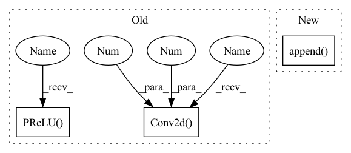

Pattern ID :116

Before Change
self.use_res_connect = self.stride == 1 and in_channels == out_channels
self.inv_block = nn.Sequential(
nn.Conv2d(in_channels, in_channels * expand_ratio, 1, 1, 0, bias=False),
nn.BatchNorm2d(in_channels * expand_ratio),
nn.PReLU(),
nn.Conv2d(in_channels * expand_ratio, in_channels * expand_ratio, 3, stride, 1,
groups=in_channels * expand_ratio, bias=False),
After Change
layers = []
if expand_ratio != 1:
// pw
layers.append(ConvBNReLU(inp, hidden_dim, kernel_size=1))
layers.extend([
// dw
ConvBNReLU(hidden_dim, hidden_dim, stride=stride, groups=hidden_dim),
// pw-linear
In pattern: SUPERPATTERN
Frequency: 3
Non-data size: 3
Instances
Fragment ID: 373405
Project Name: opendr-eu/opendr
Commit Name: 18da6a5d3ed5c2a291cb9c600a9fe4e5e17e5671
Time: 2021-01-26
Author: ptosidis@gmail.com
File Name: src/perception/face_recognition/algorithm/backbone/model_mobilenet.py
Class Name: InvertedResidual
Method Name: __init__
Parent Class: nn.Module
Fragment ID: 373415
Project Name: lornatang/srgan-pytorch
Commit Name: 8d22bf7984064e2cb3439a12eea97a0221474b21
Time: 2021-01-26
Author: liuchangyu1111@gmail.com
File Name: srgan_pytorch/models/generator.py
Class Name: Generator
Method Name: __init__
Parent Class: nn.Module
Fragment ID: 373404
Project Name: lornatang/srgan-pytorch
Commit Name: 2c11f14c44490604941be00d7661b19ad8f96597
Time: 2022-02-14
Author: liuchangyu1111@gmail.com
File Name: model.py
Class Name: Generator
Method Name: __init__
Parent Class: nn.Module
Fragment ID: 373406
Project Name: opendr-eu/opendr
Commit Name: 18da6a5d3ed5c2a291cb9c600a9fe4e5e17e5671
Time: 2021-01-26
Author: ptosidis@gmail.com
File Name: src/perception/face_recognition/algorithm/backbone/model_mobilenet.py
Class Name: InvertedResidual
Method Name: __init__
Parent Class: nn.Module